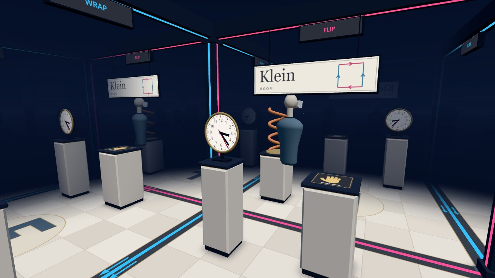

The Klein Bottle Room
The Klein Room is a small room glued to itself so that its floor plan is a Klein bottle. Walk out the left or right wall and you come back in the other side. Walk out the front or back and you come back mirror-reversed.

Works in a desktop browser, on a phone, or in the Quest Browser. Press Enter VR on the start screen to use a headset.
A Klein Bottle From the Inside
The usual picture of a Klein bottle is a bottle whose neck goes back in through its own side. That self-intersection is only there because it's being squeezed into 3D. The surface itself is easier to think about as a square with its edges glued together, one pair straight across and the other pair with a flip.
The room is that square with walls and a ceiling added. It's 3.2 m across. The walls outlined in cyan are glued straight across, like the edges of the screen in Asteroids. On their own they'd make a torus. The walls outlined in pink are glued with a flip, so whatever goes out the front comes back in the back mirrored left to right. The floor and ceiling aren't glued, so the full space is a Klein bottle times the floor-to-ceiling height.
Space in the room is still flat, so looking through a wall just shows the next copy of the room. It draws 25 copies around you, along with copies of yourself, so you can see what you look like from the other side of each wall.
Coming Back Mirrored
After you cross a pink wall, the room around you is the mirror image of the one you left. The sign reads backwards, the big F on the floor is flipped, the clock runs the other way, and the copper helix twists the other way. There's a print of a right hand on a plinth, and now your left hand is the one that fits it. Cross a pink wall again and everything is back to normal.
Nothing in the room changed. You're the one that got reflected, which can only happen in a space that isn't orientable. The menu shows how many walls you've crossed and whether you're currently mirrored.
Controls
In VR, walk around, or pinch empty space and pull to move. With controllers the left stick moves and the right stick turns.
On a desktop, use WASD or the arrow keys to move and drag to look. Return to start in the menu puts you back
where you started, the right way round.